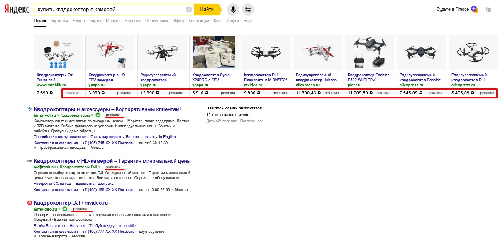

Раскрутка сайта в 2021: как раскрутить сайт быстро и бесплатно
Предположим, вы обладатель нового сайта, который имеет приятный дизайн, удобную навигацию и полезную для посетителей информацию. Веб-ресурс на днях разместили в Сети, и вы ждете наплыва интернет-пользователей. Но посетителей все нет и нет. Сайт сам себя не продвинет, вам нужно его продвинуть.
Раскрутка сайта: с чего начать?
Сначала разберемся, что это значит.
Раскрутка сайта – это меры, предпринимаемые для того, чтобы о ресурсе узнало как можно больше целевой аудитории, потенциальных потребителей продукта, представленного на сайте.
Чаще всего под такой раскруткой понимают SEO (search engine optimization) или оптимизацию ресурса под поисковые системы. Но на самом деле раскрутить сайт можно не только с помощью SEO, есть и другие каналы привлечения потенциальных клиентов и для большей отдачи их лучше компоновать.
Традиционная SEO-раскрутка
В нашей компании базовые тарифы по продвижению сайта выглядят так:
|
Идеален для интернет-магазинов и крупных компаний с большим количеством услуг. В него входит:
Мин. срок выполнения: 20 рабочих дней |
Подходит для средних сайтов любой направленности. В него входит:
Мин. срок выполнения: 15 рабочих дней |
Подходит для блогов и порталов, а также других сайтов, когда ссылочная масса не нужна. Вы получите:
Мин. срок выполнения: 10 рабочих дней |
Но только этих базовых работ уже мало, чтобы получать стабильный поток клиентов. Хотя буквально каких-то 3-5 лет назад, этого хватало, чтобы даже в высококонкурентных тематиках вывести сайт в ТОП и получить клиентов.
Сегодня все гораздо сложнее. Речь идет о трансформации SEO в SEM (search engine marketing). Поисковый маркетинг пришел на смену традиционной оптимизации и это закономерно. Поясню почему.
Результаты поисковой выдачи переполнены рекламными объявлениями (так называемой контекстной рекламой), основной трафик собирают именно они, дальше представлены крупные агрегаторы вроде Яндекс.Маркета и Google.Shopping (статья о том, как бороться с агрегаторами в ТОПе), а еще в органическую выдачу вмешаны островки, вроде карт и справочников.
Посмотрите выдачу Яндекса по коммерческому запросу: 
Одна сплошная реклама.
Как раскрутить сайт при таком окружении?
На первой странице результатов поиска остается все меньше мест для обычных сайтов. И чтобы ресурсу получать действительно хороший трафик, надо использовать все возможности поискового маркетинга – т.е. использовать не только один SEO-канал, а подключать и другие, в том числе и рекламный трафик, и размещение в Сервисах поисковиков (Яндекс.Кью, Яндекс.Дзен, Яндекс.Коллекции, Google Мой Бизнес и других), а также работать с маркетплейсами (огромное количество маркетплейсов и агрегаторов, которые сложно обойти в выдаче, но которые могут помочь получить своих клиентов и раскрутить ресурс) и справочниками организаций.
Естественно, сам по себе веб-ресурс не будет раскручиваться в Сети. Ему нужно помочь «встать на ноги» и тут нужны базовые работы, а после поддерживать и улучшать достигнутый эффект с помощью регулярного SEO-сопровождения.
Сложнее всего будет в самом начале, т.к. сил придется вкладывать много, а отдача будет минимальна. Но со временем все пойдет быстрее и быстрее. Рассчитывайте минимум на полгода-год, когда, возможно, вам не будет нравиться отдача.
Еще стоит сказать, что сейчас даже в базовой оптимизации важен комплексный подход. Если раньше было достаточно купить ссылок и слегка оптимизировать, и сайт даже с ужасным контентом попадал в ТОП, то сейчас все не так просто. Важно работать с внутренней оптимизацией, внешней и обращать внимание на поведенческие факторы. И это только та часть работ, которая связана с SEO. Именно поэтому даже в базовые тарифы мы включаем и SERM, и SMO, и работу с контентом.
Методы по раскрутке сайтов помогают в достижении 2 взаимосвязанных целей:
Но как же сайту достигнуть заветных позиций в Яндекс и Google? И Яндекс и Google оценивают в целом бизнес, который стоит за каждым конкретным сайтом. Можно хоть сколько долго и тщательно вылизывать код, работать со ссылками и писать идеальные тексты, но если бизнес сам по себе будет плохой, клиента вы не найдете. Поэтому сначала делайте бизнес, а уже потом покажите поисковикам, что вашему бизнесу стоит доверять. Как все это внедрить самостоятельно?
Раскрутка сайта своими силами
Все методы по раскрутке сайта можно объединить в 3 группы:
По каждой из них я дам полный чекап, со ссылками на детальное описание всех требующихся работ.
Вы можете самостоятельно раскрутить свой сайт и привлечь на него целевую аудиторию. Но это будет непросто. У нас над продвижением каждого сайта работает команда специалистов, минимум четыре, обычно больше: seo-стратег, линкбилдер, копирайтер, ux-специалист, маркетолог, serm-специалист, программист, технический специалист, аналитик. Каждый из них профи только в своей области.
Быть профи во всех областях довольно сложно и легко что-то не учесть, но нет ничего невозможного, попробуйте. Если будут сложности, пишите, не стесняйтесь, подскажем, поможем. Наша задача помогать малому бизнесу делать этот мир лучше. Как минимум, эта статья поможет понять, что надо делать для раскрутки своего сайта.
Но все-таки, прежде чем делать самому, посмотрите наши платные тарифы (это ни в коем случае не принуждение к покупке), просто в тарифах подробно расписано, как это делаем мы и сколько стоит тот или иной вид работ отдельно. Так будет легче следовать этой инструкции, а попутно можно посчитать, сколько денег вы сэкономили.
Начать раскрутку сайта лучше с базовой внутренней оптимизации.
Прежде, чем с головой погружаться в изучение раскрутки сайта собственными силами, рекомендую посмотреть небольшое видео, которое поможет просчитать бюджет, который может понадобиться даже при самостоятельной раскрутке:
Что бы вы ни решили, базовая оптимизация нужна каждому сайту без исключения. С нее и начнем.
I. Внутренняя оптимизация для раскрутки сайта
Она предполагает работу непосредственно над содержанием сайта, которая способствует его продвижению в поисковых системах. Прежде чем что-то оптимизировать, сделайте бэкап сайта. Пригодится, если что-то пойдет не так :)
Для внутренней оптимизации мы рекомендуем своим клиентам следующее:
Важно, чтобы количество ключевых запросов было не более 11% от объема текста. Превышение этого параметра называется «переспам» и может повлечь санкции со стороны поисковых систем. И, наконец, тексты должны быть интересны пользователям. Узнать больше о продвижении сайта статьями можно здесь. Научиться писать богические тексты можно тут.
Проверьте свой сайт на 10 частых технических ошибок внутренней оптимизации:
II. Внешняя оптимизация сайта для его раскрутки
Она предполагает продвижение ресурса посредством сторонних ресурсов. Упоминание вашего ресурса сторонними сайтами – это показатель его авторитетности. Чем больше сайтов будет ссылаться на ваш ресурс, тем больше будет его «вес» в глазах поисковых систем. Но важно, чтобы такие ссылки были естественными – не проплаченными на биржах, а вели из разных типов источников, сходных по тематике с вашим, были анкорными и безанкорными и т.д.
Есть специальный отчет в Яндекс.Метрике, называется «Переходы по ссылкам на сайтах», он поможет разобраться, какие сторонние ресурсы помогают привлекать трафик. Видео короткое, посмотрите обязательно:
Для раскрутки сайта при помощи внешних ссылок мы рекомендуем:
29. Добавить свой сайт в Яндекс.Вебмастер. Проверьте, чтобы информация о сайте была указана верно. В том числе регион. Если у вас офис в одном городе, а клиенты нужны из другого города или вовсе по всей России – указать стоит именно тот регион, клиенты из которого интересуют больше всего.
30. Добавьте сайт в вебмастер Google – https://www.google.ru/webmasters/
31. Добавьте сайт в вебмастер Bing. К слову, за долгое время они впервые обновили инструкцию.
32. Добавьте сайт в вебмастер Mail. Подробнее обо всех вебмастерах писали тут.
33. Добавьте сайт на карты Google и Яндекса – так вас смогут находить и на картах. Инструкция.
34. Добавьте сайт в справочник Яндекса и Google для Бизнеса. Поисковики ценят, когда пользуются их ресурсами.
35. Добавьте сайт в популярные каталоги и справочники организаций. Это те самые НЕ SEO-ссылки, которые любят Яндекс и Google. Список популярных.
36. Почитайте про крауд-маркетинг. Добавьте информацию о сайте на форумы, блоги, сервисы вопросов и ответов, отзывики, рекомендательные площадки и другие популярные ресурсы. Список площадок можно получить тут.
37. Продвигайтесь статьями. Напишите интересные экспертные статьи и разместите их на сторонних источниках.
38. Разместите сайт в других популярных сервисах Яндекса и Google.
III. Раскрутка и оптимизация сайта под социальные сети
Хотите привлечь на сайт трафик из социальных сетей? Тогда нужно поработать над ресурсом так, чтобы информацию с него хотелось цитировать, делиться ею с друзьями.
С какой площадки лучше начать, расскажет моя коллега Ольга Анурьева:
Для этого потребуется целый комплекс мер:
39. Добавьте на ресурс кнопки «Поделиться» и «Мне нравится» из Вконтакте, Одноклассников, Facebook, Twitter.
40. Установите на сайте виджеты «Комментировать» и «Подписаться» из социальных сетей.
41. Размещайте в соцсетях ссылки на свой ресурс. Лучше всего это делать в открытых группах в Facebook и ВК.
42. Еще есть «Яндекс.Дзен», «Лайфхакер», «Спарк» и аналогичные площадки.
43. Публикуйте видео на YouTube, в Instagram, в Facebook, во «ВКонтакте».
44. Не забывайте про нетрадиционные площадки Pinterest, Twitter, TikTok, Linkedin и др.
45. Крауд-маркетинг для соцсетей. Не обязательно заводить сообщества во всех соцсетях, но при случае упоминать свой сайт во всех обязательно.
Используйте другие методы оптимизации сайта под социальные сети.
Конечно, только этими этапами раскрутка сайта не ограничивается, рекомендую открыть нашу карту продвижения и отметить на ней, что уже сделано. Карта интерактивная – подскажет, что делать дальше и как вытащить сайт в ТОП. Если вы реализуете все рекомендации, улучшение позиций веб-ресурса можно прогнозировать с 99% вероятностью.
Советы новичкам по раскрутке сайта
Кажется сложным и неподъемным? На самом деле, главное начать. Базовая оптимизация и раскрутка редко вызывает трудности, обычно, наоборот, кажется очень простой, но на деле требует много времени и усидчивости. А вот если после всей проделанной работы новых клиентов так и нет, тогда есть смысл попросить помощи у специалистов, посмотрим, что идет не так и скорректируем ваши действия.
Чем мы можем быть для вас полезны:
Раскрутка сайта — это кропотливая комплексная ежедневная работа, которая при правильном подходе дает результат, но в то же время цена одной небольшой ошибки слишком высока и годы продвижения могут сойти на нет.
# оптимизация сайта # продвижение сайта
© 1PS.RU, при полном или частичном копировании материала ссылка на первоисточник обязательна.